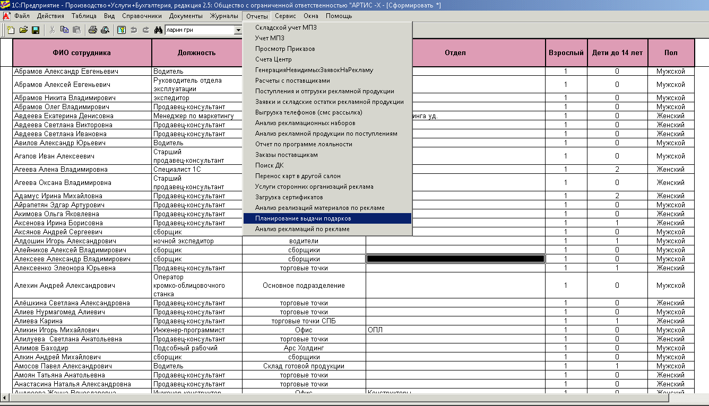

Загрузить данные из 1С7
Загрузить данные из Senesys
Артис
Гуд Вуд
Эмульком
1
В 1С7 выгрузить отчет
Планирование выдачи подарков

или попросить его у Афонина Артема (afonin.a@artis21.ru, 4575)
2
Выгрузить нужные данные из Senesys
3
Получившиеся файлы
сохранить в формате CSV
4
Загрузить их через интерфейс программы